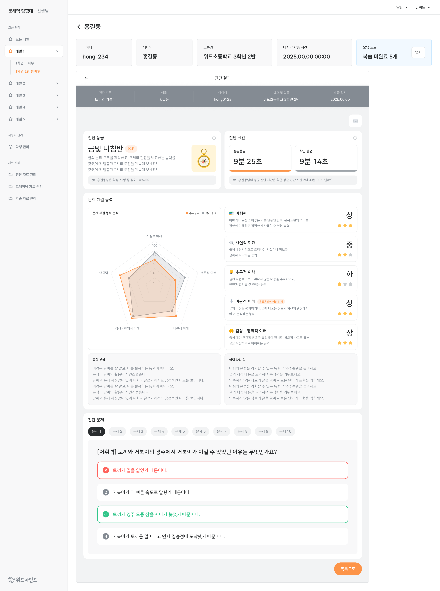

선생님 문해력 탐험대
운영 중인 학생용 문해력 학습 서비스를 고도화하고, 수업·학생·성과를 관리하는 선생님용 페이지를 개발했습니다.
프로젝트 개요
초등학생의 듣기·말하기·읽기·쓰기 학습을 지원하는 문해력 서비스입니다. 저는 초기 구축부터 참여한 것이 아니라, 운영 중인 학생용 서비스의 고도화와 선생님이 학습 현황을 관리하는 페이지 개발을 맡았습니다.
학생 화면에서는 학습 진행과 결과가 즉시 이해되도록 흐름을 다듬었고, 선생님 화면에서는 여러 학생과 학급의 상태를 빠르게 찾고 관리할 수 있도록 목록·상세·등록·통계 화면을 연결했습니다.
담당 범위
- 학생용 서비스 고도화 학습 여정, 문제 풀이, 음성 학습, 결과 확인 화면의 사용 흐름을 개선했습니다.
- 선생님용 페이지 개발 학급·학생·문제·학습 결과를 관리하는 운영 화면을 구현했습니다.
- 관리 작업 상태 설계 등록·수정·삭제·파일 업로드의 정상, 오류, 확인 상태를 화면에 반영했습니다.
- 학습 결과 시각화 학생별 진행 상태와 영역별 결과를 목록과 차트로 확인할 수 있게 구성했습니다.
전체 제품을 새로 만든 프로젝트로 과장하지 않고, 기존 서비스에서 실제 학습·운영 흐름을 확장한 기여를 중심으로 정리했습니다.
학생용 서비스 고도화
학습 여정에서 현재 단계와 다음 행동을 확인하고, 객관식·음성·단답형 문제를 거쳐 결과를 확인하는 흐름을 고도화했습니다.



선생님용 페이지 개발
선생님이 학급과 학생을 관리하고, 학습 진행과 결과를 확인할 수 있는 관리 페이지를 개발했습니다.